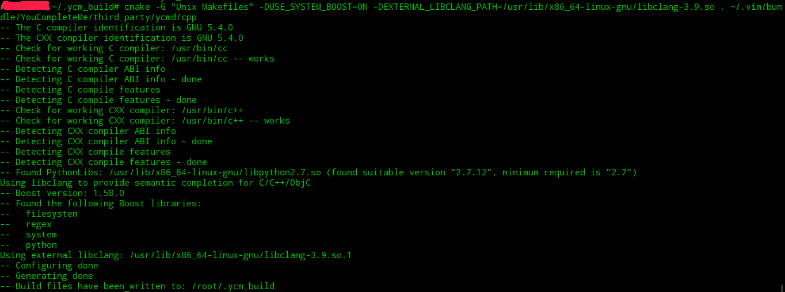
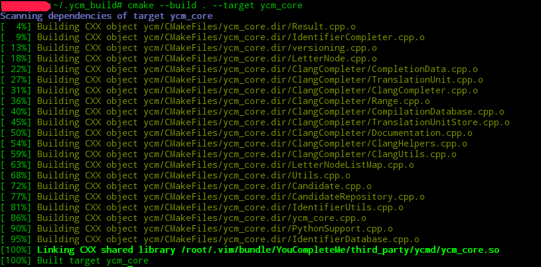
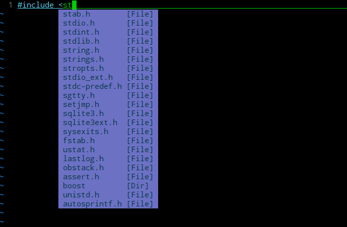

ycm Install
vim8.0 Install YCM(YouCompleteMe) - Deepin Linux
1. 从github仓库clone YCM源码
通常使用Vundle直接安装YCM会出现缺少Python module 如future的情况 因此这里使用源码编译安装YCM
cd ~/.vim/bundle
git clone --recursive https://github.com/Valloric/YouCompleteMe.git
# change direction to ~/.vim/bundle/Youcomplete
cd ~/.vim/bundle/YouCompleteMe
git submodule update --init --recursive
# 下载完成大概有 230+M
2. 安装编译YCM需要的组件
为了支持C家族的补全，我们需要使用clang3.9+等从本地编译YCM源码
sudo apt-get install llvm-3.9 clang-3.9 libclang-3.9-dev libboost-all-dev
# cmake python3-dev 必需
sudo apt-get cmake python3-dev python-dev
3. 开始本地编译YCM
#新建文件夹用于存放编译好的文件
mkdir ~/.ycm_build
cd ~/.ycm_build
#指定libclang版本生成makefile文件
cmake -G "Unix Makefiles" -DUSE_SYSTEM_BOOST=ON -DEXTERNAL_LIBCLANG_PATH=/usr/lib/x86_64-linux-gnu/libclang-3.9.so . ~/.vim/bundle/YouCompleteMe/third_party/ycmd/cpp
#构建核心库
cmake --build . --target ycm_core
#配置.ycm_extra_conf.py
cp ~/.vim/bundle/YouCompleteMe/third_party/ycmd/examples/.ycm_extra_conf.py ~/.vim/
# 修改.vimrc配置文件
vim ～/.vimrc
let g:ycm_server_python_interpreter='/usr/bin/python'
let g:ycm_global_ycm_extra_conf='~/.vim/.ycm_extra_conf.py'
 
4. 测试安装结果
建立hello.c文件,测试配置结果。

5. 迁移配置结果到root用户
使用软连接将用户的配置迁移到root用户 反之也可实现将root的配置迁移到某一用户
ln -s /home/sl/.vim /root/.vim
ln -s /home/sl/.vimrc /root/.vimrc
Reference
[1:] https://www.jianshu.com/p/d908ce81017a?nomobile=yes
Personal Information
- Email: byuegv@gmail.com
- Blog: github-blog